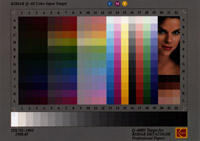
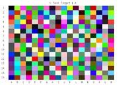
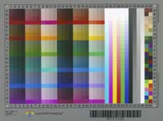

Typical usage Scenarios and Examples
Choose a task from the list below. For more details on alternative
options, follow the links to the individual tools being used.
Note that by default it is assumed that ICC profile have the file
extension .icm, but that on
Apple OS X and Unix/Linux platforms, the .icc extension is expected and should be used.
Image dependent gamut
mapping using device links
Soft Proofing Link
Profiling Displays
Argyll supports adjusting, calibrating and profiling of displays
using one of a number of instruments - see instruments for a current list.
Adjustment and calibration are prior steps to profiling, in which
the display is adjusted using it's screen controls, and then
per channel lookup tables are created to make it meet a well behaved
response of the desired type. The process following that of
creating a display profile is then similar to that of all other
output devices :- first a set of device colorspace test values needs
to be created to exercise the display, then these values need to be
displayed, while taking measurements of the resulting colors using
the instrument. Finally, the device value/measured color values need
to be converted into an ICC profile.
Checking you can access your display
You might first want to check that you are accessing and can
calibrate your display. You can do this using the dispwin
tool. If you just run dispwin it will create a test
window and run through a series of test colors before checking that
the VideoLUT can be accessed by the display. If you invoke the usage
for dispwin (by giving it
an unrecognized option, e.g. -?)
then it will show a list of available displays next to the -d
flag. Make sure that you are accessing the display you intend to
calibrate and profile, and that the VideoLUT is effective (the -r flag can be used to just run
the VideoLUT test). You can also try clearing the VideoLUTs using
the -c flag, and loading a
deliberately strange looking calibration strange.cal that is provided in the Argyll ref directory.
Note that calibrating and/or profiling remote displays is possible using X11 or a web
browser (see -d option of
dispcal and dispread), or by using some external program to send
test colors to a display (see -C
and -M options of dispcal
and dispread), but you may want to refer to Calibrating
and profiling a display that doesn't have VideoLUT access.
Adjusting and Calibrating Displays
Please read What's the difference between
Calibration and Characterization ? if you are unclear as to
the difference .
Note that if your display has a good luminous response
characteristic, that you may get a better overall result by
adjusting the display curves to your desired white point and
brightness using displcal, and then skipping the creation of
calibration curves. Apart from saving time, this may give an overall
smoother looking result, depending on the
hardware resolution available in the 1D lookup tables used for
calibration. In this case, after adjusting the display, exit from
dispcal and skip to Profiling in
several steps: Creating display test values).
The first step is to decide what the target should be for adjustment
and calibration. This boils down to three things: The desired
brightness, the desired white point, and the desired response curve.
The native brightness and white points of a display may be different
to the desired characteristics for some purposes. For instance, for
graphic arts use, it might be desirable to run with a warmer white
point of about 5000 degrees Kelvin, rather than the default display
white point of 6500 to 9000 Kelvin. Some LCD displays are too bright
to compare to printed material under available lighting, so it might
be desirable to reduce the maximum brightness.
You can run dispcal -r to check on how
your display is currently set up. (you may have to run this as dispcal
-yl
-r for an LCD display, or dispcal -yc -r for a
CRT display with most of the colorimeter instruments. If so, this
will apply to all of the following examples.)
Once this is done, dispcal can be run to
guide you through the display adjustments, and then calibrate it. By
default, the brightness and white point will be kept the same as the
devices natural brightness and white point. The default response
curve is a gamma of 2.4, except for Apple OS X systems prior to 10.6
where a gamma of 1.8 is the default. 2.4 is close to that of
many monitors, and close to that of the sRGB colorspace.
A typical calibration that leaves the brightness and white point
alone, might be:
dispcal -v TargetA
which will result in a "TargetA.cal" calibration file, that can then
be used during the profiling stage.
If the absolutely native response of the display is desired during
profiling, then calibration should be skipped, and the linear.cal
file from the "ref" directory used instead as the argument to the -k
flag of dispread.
Dispcal will display a test window in the middle of the
screen, and issue a series of instructions about placing the
instrument on the display. You may need to make sure that the
display cursor is not in the test window, and it may also be
necessary to disable any screensaver and powersavers before starting
the process, although both dispcal
and dispread will attempt
to do this for you. It's also highly desirable on CRT's, to clear
your screen of any white or bright background images or windows
(running your shell window with white text on a black background
helps a lot here.), or at least keep any bright areas away from the
test window, and be careful not to change anything on the display
while the readings are taken. Lots of bright images or windows can
affect the ability to measure the black point accurately, and
changing images on the display can cause inconsistency in the
readings, and leading to poor results. LCD displays seem to be less
influenced by what else is on the screen.
If dispcal is run without
arguments, it will provide a usage screen. The -c parameter allows selecting a
communication port for an instrument, or selecting the instrument
you want to use, and the -d option allows selecting
a target display on a multi-display system. On some multi-monitor
systems, it may not be possible to independently calibrate and
profile each display if they appear as one single screen to the
operating system, or if it is not possible to set separate video
lookup tables for each display. You can change the position and size
of the test window using the -P parameter. You can
determine how best to arrange the test window, as well as whether
each display has separate video lookup capability, by experimenting
with the dispwin tool.
For a more detailed discussion on interactively adjusting the
display controls using dispcal,
see dispcal-adjustment. Once
you have adjusted and calibrated your display, you can move on to
the next step.
When you have calibrated and profiled your display, you can keep it
calibrated using the dispcal -u
option.
Adjusting, calibrating and profiling in one
step.
If a simple matrix/shaper display profile is all that is desired, dispcal can be used to do this,
permitting display adjustment, calibration and profiling all in one
operation. This is done by using the dispcal -o
flag:
dispcal -v
-o TargetA
This will create both a TargetA.cal file, but also a TargetA.icm
file. See -o and -O for other variations.
For more flexibility in creating a display profile, the separate
steps of creating characterization test values using targen, reading them from the
display using dispread, and
then creating a profile using colprof
are used. The following steps illustrate this:
Profiling in several steps: Creating display
test values
If the dispcal has not been
used to create a display profile at the same time as adjustment and
calibration, then it can be used to create a suitable set of
calibration curves as the first step, or the calibration step can be
omitted, and the display cansimply be profiled.
The first step in profiling any output device, is to create a set of
device colorspace test values. The important parameters needed are:
- What colorspace does the device use ?
- How many test patches do I want to use ?
- What information do I already have about how the device
behaves ?
For a display device, the colorspace will be RGB. The number
of test patches will depend somewhat on what quality profile you
want to make, what type of profile you want to make, and how long
you are prepared to wait when testing the display.
At a minimum, a few hundred values are needed. A matrix/shaper type
of profile can get by with fewer test values, while a LUT based
profile will give better results if more test values are used. A
typical number might be 200-600 or so values, while 1000-2000 is not
an unreasonable number for a high quality characterization of a
display.
To assist the choice of test patch values, it can help to have a
rough idea of how the device behaves. This could be in the form of
an ICC profile of a similar device, or a lower quality, or previous
profile for that particular device. If one were going to make a very
high quality LUT based profile, then it might be worthwhile to make
up a smaller, preliminary shaper/matrix profile using a few hundred
test points, before embarking on testing the device with several
thousand.
Lets say that we ultimately want to make a profile for the device
"DisplayA", the simplest approach is to make a set of test values
that is independent of the characteristics of the particular device:
targen -v
-d3 -f500
DisplayA
If there is a preliminary or previous profile called "OldDisplay"
available, and we want to try creating a "pre-conditioned" set of
test values that will more efficiently sample the device response,
then the following would achieve this:
targen -v
-d3 -f500
-cOldDisplay.icm DisplayA
The output of targen will be the file DisplayA.ti1,
containing the device space test values, as well as expected CIE
values used for chart recognition purposes.
Profiling in several steps: Taking readings
from a display
First it is necessary to connect your measurement instrument to your
computer, and check which communication port it is connected to. In
the following example, it is assumed that the instrument is
connected to the default port 1, which is either the first USB
instrument found, or serial port found. Invoking dispread so as to
display the usage information (by using a flag -? or --) will list
the identified serial and USB ports, and their labels.
dispread -v
DisplayA
If we created a calibration for the display using dispcal, then we will want to use this
when we take the display readings (e.g. TargetA.cal from the
calibration example)..
dispread -v
-k TargetA.cal DisplayA
dispread will display a test window in the middle of the
screen, and issue a series of instructions about placing the
instrument on the display. You may need to make sure that the
display cursor is not in the test window, and it may also be
necessary to disable any screensaver before starting the process.
Exactly the same facilities are provided to select alternate
displays using the -d
parameter, and an alternate location and size for the test window
using the -P parameter as
with dispcal.
Profiling in several steps: Creating a display
profile
There are two basic choices of profile type for a display, a
shaper/matrix profile, or a LUT based profile. They have different
tradeoffs. A shaper/matrix profile will work well on a well behaved
display, that is one that behaves in an additive color manner, will
give very smooth looking results, and needs fewer test points to
create. A LUT based profile on the other hand, will model any
display behaviour more accurately, and can accommodate gamut mapping
and different intent tables. Often it can show some unevenness and
contouring in the results though.
To create a matrix/shaper profile, the following suffices:
colprof -v
-D"Display A" -qm
-as DisplayA
For a LUT based profile, where gamut mapping is desired, then a
source profile will need to be provided to define the source gamut.
For instance, if the display profile was likely to be linked to a
CMYK printing source profile, say "swop.icm" or "fogra39l.icm", then
the following would suffice:
colprof -v
-D"Display A" -qm
-S
fogra39l.icm -cpp -dmt DisplayA
A fallback to using a specific source profile/gamut is to use a
general compression percentage as a gamut mapping:
colprof -v
-D"Display A" -qm
-S 20 -cpp -dmt
DisplayA
Make sure you check the delta E report at the end of the profile
creation, to see if the sample data and profile is behaving
reasonably.
If a calibration file was used with dispread,
then it will be converted to a vcgt tag in the profile, so that the
operating system or other system color tools load the lookup curves
into the display hardware, when the profile is used.
Installing a display profile
dispwin provides a convenient way of
installing a profile as the default system profile for the chosen
display:
dispwin -I
DisplayA.icm
This also sets the display to the calibration contained in the
profile. If you want to try out a calibration before installing the
profile, using dispwin without the -I
option will load a calibration (ICC profile or .cal file) into the
current display.
Some systems will automatically set the display to the calibration
contained in the installed profile (ie. OS X), while on other
systems (ie. MSWindows and Linux/X11) it is necessary to use some
tool to do this. On MSWindows XP you could install the
optional Microsoft Color Control Panel Applet for Windows XP
available for download from Microsoft to do this, but NOTE however that it seems to
have a bug, in that it
sometimes associates the profiles with the wrong monitor entry. Other
display calibration tools will often install a similar tool, so
beware of there being multiple, competing programs. [ Commonly these
will be in your Start->Programs->Startup folder. ]
On Microsoft Vista, you need to use dispwin -L or some other tool to
load the installed profiles calibration at startup.
To use dispwin to load the installed profiles calibration to the
display, use
dispwin -L
As per usual, you can select the appropriate display using the -d flag.
This can be automated on MSWindows and X11/Linux by adding this
command to an appropriate startup script.
More system specific details, including how to create such startup
scripts are here.
If you are using Microsoft Vista,
there is a known bug in
Vista that resets the calibration every time a fade-in effect is
executed, which happens if you lock and unlock the computer, resume
from sleep or hibernate, or User Access Control is activated. Using
dispwin -L
may not restore the calibration, because Vista filters out setting
(what it thinks) is a calibration that is already loaded. Use dispwin -c -L
as a workaround, as this will first clear the calibration, then
re-load the current calibration.
On X11/Linux systems, you could try adding dispwin
-L to your ~/.config/autostart file, so that your window
manager automatically sets calibration when it starts. If you are
running XRandR 1.2, you might consider running the experimental dispwin -E in the background, as in its
"daemon" mode it will update the profile and calibration in response
to any changes in the the connected display.
Expert tips when measuring displays:
Sometimes it can be difficult to get good quality, consistent and
visually relevant readings from displays, due to various practical
considerations with regard to instruments and the displays
themselves. Argyll's tools have some extra options that may assist
in overcoming these problems.
If you are using an Eye-One Pro or ColorMunki spectrometer, then you
may wish to use the high resolution
spectral mode (-H).
This may be better at capturing the often narrow wavelength peaks
that are typical of display primary colors.
All instruments depend on silicon sensors, and such sensors generate
a temperature dependant level of noise ("dark noise") that is
factored out of the measurements by a dark or black instrument
calibration. The spectrometers in particular need this calibration
before commencing each set of measurements. Often an instrument will
warm up as it sits on a display, and this warming up can cause the
dark noise to increase, leading to inaccuracies in dark patch
measurements. The longer the measurement takes, the worse this
problem is likely to be. One way of addressing this is to
"acclimatise" the instrument before commencing measurements by
placing it on the screen in a powered up state, and leaving it for
some time. (Some people leave it for up to an hour to acclimatise.).
Another approach is to try and compensate
for dark calibration changes (-Ib)
by doing on the fly calibrations during the measurements, based on
the assumption that the black level of the display itself won't
change significantly.
Some displays take a long time to settle down and stabilise. The is
often the case with LCD (Liquid Crystal) displays that use
fluorescent back lights, and these sorts of displays can change in
brightness significantly with changes in temperature. One way of
addressing this is to make sure that the display is given adequate
time to warm up before measurements. Another approach is to try and
compensate for display white level
(-Iw) changes by doing on
the fly calibrations during the measurements. Instrument black level
drift and display white level drift can be combined (-Ibw).
Colorimeter instruments make use of physical color filters that
approximate the standard observer spectral sensitivity curves.
Because these filters are not perfectly accurate, the manufacturer
calibrates the instrument for typical displays, which is why you
have to make a selection between CRT (Cathode Ray Tube) and LCD
(Liquid Crystal Display) modes. If you are measuring a display that
has primary colorants that differ significantly from those typical
displays, (ie. you have a Wide Gamut Display), then you may
get disappointing results with a Colorimeter. One way of addressing
this problem is to use a Colorimeter
Correction Matrix. These are specific to a particular
Colorimeter and Display make and model combination, although a
matrix for a different but similar type of display may give better
results than none at all. A list of contributed ccmx files is here.
Another, more general approach to correcting Colorimeters is to
store the spectral sensitivities for each individual instrument in
the instrument itself, and then combine that with spectral samples
for a particular display type to compute a specific instrument +
display correction matrix on the fly (i.e. the i1d3 * Spyder 4 &
5 instruments). The display spectral samples can be stored in a Colorimeter Correction Spectral
Sample file. A list of contributed ccss files is here.
Calibrating and profiling a display that
doesn't have VideoLUT access.
In some situation there is no access to a displays VideoLUT
hardware, and this hardware is what is usually used to implement
display calibration. This could be because the display is being
accessed via a web server, or because the driver or windowing
system doesn't support VideoLUT access. You may also have chosen
to not use calibration curves because your display inherently has
good luminous response characteristic, and hence want to just
profile the display (option 1 below).
There are two basic options in this situation:
1) Don't attempt to calibrate, just profile the display.
2) Calibrate, but incorporate the calibration in some other
way in the workflow.
The first case requires nothing special - just skip calibration
(see the previous section Profiling in several
steps: Creating display test values).
In the second case, there are three choices:
2a) Use dispcal to create a calibration and a quick profile
that incorporates the calibration into the profile.
2b) Use dispcal to create the calibration, then dispread and
colprof to create a profile, and then incorporate the calibration
into the profile using applycal.
2c) Use dispcal to create the calibration, then dispread and
colprof to create a profile, and then apply the calibration after
the profile in a cctiff workflow.
Case 2a) requires nothing special, use dispcal in a normal
fashioned with the -o
option to generate a quick profile.The profile created will not contain a 'vcgt'
tag, but instead will have the calibration curves incorporated
into the profile itself. If calibration parameters are chosen that
change the displays white point or brightness, then this will
result in a slightly unusual profile that has a white point that
does not correspond with device R=G=B=1.0. Some systems may not
cope properly with this type of profile, and a general shift in
white point through such a profile can create an odd looking
display if it is applied to images but not to other elements on
the display say as GUI decoration elements or other application
windows.
In case 2b), the calibration file created using dispcal should be
provided to dispread using the -K
option and -Y p flag:
dispread -v
-K TargetA.cal -Y k DisplayA
Create the profile as
usual using colprof. but note that colprof will ignore the
calibration, and that no 'vcgt' tag will be added to the profile.
You can then use applycal to combine
the calibration into the profile. Note that the resulting profile
will be slightly unusual, since the profile is not made completely
consistent with the effects of the calibration, and the device
R=G=B=1.0 probably not longer corresponds with the PCS white or
the white point.
In case 2c), the same procedure as above is used to create a
profile, but the calibration is applied in a raster transformation
workflow explicitly, e.g.:
cctiff SourceProfile.icm DisplayA.icm DisplayA.cal
infile.tif outfile.tif
or
cctiff SourceProfile.icm DisplayA.icm DisplayA.cal
infile.jpg outfile.jpg
Profiling Scanners and other input devices
such as cameras
Because a scanner or camera is an input device, it is necessary to
go about profiling it in quite a different way to an output device.
To profile it, a test chart is needed to exercise the input device
response, to which the CIE values for each test patch is known.
Generally standard reflection or transparency test charts are used
for this purpose.
Types of test charts
The most common and popular test chart for scanner profiling is the
IT8.7/2 chart. This is a standard format chart generally reproduced
on photographic film, containing about 264 test patches.
An accessible and affordable source of such targets is Wolf Faust a
www.coloraid.de.
Another source is LaserSoft www.silverfast.com.
The Kodak Q-60 Color Input Target is also a typical example:

A very simple chart that is widely available is the Macbeth
ColorChecker chart, although it contains only 24 patches and
therefore is probably not ideal for creating profiles:
Other popular charts are the X-Rite/GretagMacbeth ColorChecker DC
and ColorChecker
SG charts:
A chart provided for camera profiling is the X-Rite ColorCheckerPassport:
The GretagMacbeth Eye-One Pro Scan Target 1.4 can also be used:

Also supported is the HutchColor
HCT :
Christophe Métairie's
Digital TargeT 003, Christophe
Métairie's Digital Target - 4 , and Christophe
Métairie's Digital Target - 7:
and Christophe
Métairie's Digital Target 2019: Christophe Métairie's
Digital Target Studio Edition: Christophe Métairie's
Digital Target Mini:


The LaserSoft
Imaging DCPro Target:
and the LaserSoft
Imaging ISO12641-2 reflective target:

and the LaserSoft
Imaging ISO12641-2 transparency target: in three parts:
The Datacolor SpyderCheckr:
The Datacolor SpyderCheckr24:
One of the QPcard's:
QPcard
201: QPcard
202:
Taking readings from a scanner or camera
The test chart you are using needs to be placed on the scanner, and
the scanner needs to be configured to a suitable state, and restored
to that same state when used subsequently with the resulting
profile. For a camera, the chart needs to be lit in a controlled and
even manner using the light source that will be used for subsequent
photographs, and should be shot so as to minimise any geometric
distortion, although the scanin -p flag
may be used to compensate for some degree of distortion. As with any
color profiling task, it is important to setup a known and
repeatable image processing flow, to ensure that the resulting
profile will be usable.
The chart should be captured and saved to a TIFF format file. I will
assume the resulting file is called scanner.tif. The raster file
need only be roughly cropped so as to contain the test chart
(including the charts edges).
The second step is to extract the RGB values from the scanner.tif
file, and match then to the reference CIE values. To locate the
patch values in the scan, the scanin tool needs to be given
a template .cht file that
describes the features of the chart, and how the test patches are
labeled. Also needed is a file containing the CIE values for each of
the patches in the chart, which is typically supplied with the
chart, available from the manufacturers web site, or has been
measured using a spectrometer.
For an IT8.7/2 chart, this is the
ref/it8.cht file
supplied with Argyll, and the manufacturer will will supply
an individual or batch average file along with the chart
containing this information, or downloadable from their web site.
For instance, Kodak Q60 target reference files are
here.
NOTE that the reference file for the IT8.7/2 chart supplied with
Monaco EZcolor can be
obtained by unzipping the .mrf file. (You may have to make a copy
of the file with a .zip extension to do this.)
If you are using one of Wolf Faust's IT8.7/2 charts, you may find
that the
ref/it8Wolf.cht file is more reliable.
For the ColorChecker 24 patch chart, the
ref/ColorChecker.cht file
should be used, and there is also a
ref/ColorChecker.cie file provided that is based
on the manufacturers reference values for the chart. You can also
create your own reference file using an instrument and chartread,
making use of the chart reference file
ref/ColorChecker.ti2:
chartread -n
ColorChecker.ti2
Note that due to the small number of patches, a profile created
from such a chart is not likely to be very detailed.
For the ColorChecker DC chart, the
ref/ColorCheckerDC.cht file should be used, and
there will be a ColorCheckerDC reference file supplied by
X-Rite/GretagMacbeth with the chart.
The ColorChecker SG is relatively expensive, but is preferred by
many people because (like the ColorChecker and ColorCheckerDC) its
colors are composed of multiple different pigments, giving it
reflective spectra that are more representative of the real world,
unlike many other charts that are created out of combination of 3
or 4 colorants.
A limited CIE reference file is available from X-Rite
here,
but it is not in the usual CGATS format. To convert it to a CIE
reference file useful for
scanin,
you will need to edit the X-Rite file using a
plain text editor,
first deleting everything before the line starting with "A1" and
everything after "N10", then prepending
this
header, and appending
this footer,
making sure there are no blank lines inserted in the process. Name
the resulting file
ColorCheckerSG.cie.
There are reports that X-Rite have experimented with different ink
formulations for certain patches, so the above reference may not
be as accurate as desired, and it is preferable to measure your
own chart using a spectrometer, if you have the capability.
If you do happen to have access to a more comprehensive instrument
measurement of the ColorChecker SG, or you have measured it
yourself using chart reading software other than ArgyllCMS, then
you
may need to
convert the reference information from spectral only
ColorCheckerSG.txt file to CIE
value
ColorCheckerSG.cie
reference file, follow the following steps:
txt2ti3
ColorCheckerSG.txt ColorCheckerSG
spec2cie
ColorCheckerSG.ti3 ColorCheckerSG.cie
For the full ColortChecker Passport chart, the
ref/ColorCheckerPassport.cht
file should be used, or if just the 24 patches corresponding to
the original ColorChecker are in the shot, the
ref/ColorCheckerHalfPassport.cht
should be used. A user has kindly provided their measured values
for this chart, and they are available in
ref/ColorCheckerPassport.cie
and
ref/ColorCheckerHalfPassport.cie respectively.
For the Eye-One Pro Scan Target 1.4 chart, the
ref/i1_RGB_Scan_1.4.cht
file should be used, and as there is no reference file
accompanying this chart, the chart needs to be read with an
instrument (usually the Eye-One Pro). This can be done using
chartread, making use of the chart reference file
ref/i1_RGB_Scan_1.4.ti2:
chartread -n
i1_RGB_Scan_1.4
and then rename the resulting
i1_RGB_Scan_1.4.ti3
file to
i1_RGB_Scan_1.4.cie
For the HutchColor HCT chart, the
ref/Hutchcolor.cht
file should be used, and the reference
.txt file downloaded from the HutchColor website.
For the Christophe Métairie's Digital TargeT 003 chart with 285
patches, the
ref/CMP_DT_003.cht
file should be used, and the cie reference
files come with the chart.
For the Christophe Métairie's Digital Target-4 chart with 570
patches, the
ref/CMP_Digital_Target-4.cht
file should be used, and the cie reference
files come with the chart.
For the Christophe Métairie's Digital Target-7 chart with 570
patches, the
ref/CMP_Digital_Target-7.cht
file should be used, and the spectral .txt file provided with the
chart should be converted to a cie reference file:
txt2ti3
DT7_XXXXX_Spectral.txt temp
spec2cie temp.ti3
DT7_XXXXX.cie
For the Christophe Métairie's Digital Target 2019 with 522
patches, the
ref/CMP_Digital_Target_2019.cht
file should be used, and the spectral .txt file provided with the
chart should be converted to a cie reference file:
txt2ti3 "DT SPECT
451.txt" temp
spec2cie temp.ti3
DT_SPECT_451.cie
For the Christophe Métairie's Digital Target Studio Edition chart
with 988 patches, the
ref/CMP_Digital_Target_Studio.cht
file should be used, and the spectral .txt file provided with the
chart should be converted to a cie reference file:
txt2ti3 "CMP DT-SE
100 Spectral.txt" temp
spec2cie temp.ti3
CMP_DT-SE_100_Spectral.cie
For the Christophe Métairie's Digital Target Mini chart with 126
patches, the
ref/CMP_DT_mini.cht.cht
file should be used, and the spectral .txt file provided with the
chart should be converted to a cie reference file:
txt2ti3 "CMP
DT-SE 100 Spectral.txt" temp
spec2cie
temp.ti3 CMP_DT-SE_100_Spectral.cie
It is probably best to roughly crop this target to only contain
the right hand side before using with scanin.
For the LaserSoft DCPro chart, the
ref/LaserSoftDCPro.cht file should be used, and
reference
.txt file
downloaded from the
Silverfast
website.
For the LaserSoft
ISO 12641-2 reflective chart, the
ref/ISO12641_2_1.cht
file should be used, and reference
.CxF file downloaded from the
Silverfast
website, and the .CxF file converted to the cie reference
file:
cxf2ti3 Rnnnnnn.cxf
Rnnnnnn
The LaserSoft
ISO 12641-2 transmissive chart comes in
three parts, and the
ref/ISO12641_3_1.cht,
ref/ISO12641_3_2.cht
and
ref/ISO12641_3_2.cht recognition files should be used,
and the reference
.CxF
file downloaded from the
Silverfast
website, and the .CxF file converted to the cie reference
file:
cxf2ti3 Ennnnnn.cxf
Ennnnnn
After creating three corresponding .ti3 files using scanin, the
files should be combined using
average:
average -m
scan1.ti3 scan2.ti3 scan3.ti3 combined.ti3
For the Datacolor SpyderCheckr, the
ref/SpyderChecker.cht file should be used, and a
reference
ref/SpyderChecker.cie
file made from measuring a sample chart is also available.
Alternately you could create your own reference file by
transcribing the
values
on the Datacolor website.
For the Datacolor SpyderCheckr24, the
ref/SpyderChecker24.cht file should be used, and a
reference
ref/SpyderChecker24.cie
file made from measuring a sample chart is also available.
Alternately you could create your own reference file by
transcribing the
values
on the Datacolor website.
For the QPCard 201, the
ref/QPcard_201.cht
file should be used, and a reference
ref/QPcard_201.cie file made from measuring a
sample chart is also available.
For the QPCard 202, the
ref/QPcard_202.cht
file should be used, and a reference
ref/QPcard_202.cie file made from measuring a
sample chart is also available.
For any other type of chart, a chart recognition template file will
need to be created (this is beyond the scope of the current
documentation, although see the .cht_format
documentation).
To create the scanner .ti3 file, run the scanin tool as
follows (assuming an IT8 chart is being used):
scanin -v scanner.tif It8.cht It8ref.txt
"It8ref.txt" or "It8ref.cie" is assumed to be the name of the CIE
reference file supplied by the chart manufacturer. The resulting
file will be named "scanner.ti3".
scanin will process 16 bit
per component .tiff files, which (if the scanner is capable of
creating such files), may improve the quality of the profile.
If you have any doubts about the correctness of the chart
recognition, or the subsequent profile's delta E report is unusual,
then use the scanin diagnostic flags -dipn
and examine the diag.tif
diagnostic file, to make sure that the patches are identified and
aligned correctly. If you have problems getting good automatic
alignment, then consider doing a manual alignment by locating the
fiducial marks on your scan, and feeding them into scanin -F parameters. The fiducial marks should
be listed in a clockwise direction starting at the top left.
Creating a scanner or camera input profile
Similar to a display profile, an input profile can be either a
shaper/matrix or LUT based profile. Well behaved input devices will
probably give the best results with a shaper/matrix profile, and
this may also be the best choice if your test chart has a small or
unevenly distributed set of test patchs (ie. the IT8.7.2). If a
shaper/matrix profile is a poor fit, consider using a LUT type
profile.
When creating a LUT type profile, there is the choice of XYZ or
L*a*b* PCS (Device independent, Profile Connection Space). Often for
input devices, it is better to choose the XYZ PCS, as this may be a
better fit given that input devices are usually close to being
linearly additive in behaviour.
If the purpose of the input profile is to use it as a substitute for
a colorimeter, then the -ua flag should be used to force
Absolute Colorimetric intent, and avoid clipping colors above the
test chart white point. Unless the shaper/matrix type profile is a
very good fit, it is probably advisable to use a LUT type profile in
this situation.
To create a matrix/shaper profile, the following suffices:
colprof -v
-D"Scanner A"
-qm -as scanner
For an XYZ PCS LUT based profile then the following would be used:
colprof -v
-D"Scanner A" -qm
-ax scanner
For the purposes of a poor mans colorimeter, the following would
generally be used:
colprof -v
-D"Scanner A" -qm
-ax -ua scanner
Make sure you check the delta E report at the end of the profile
creation, to see if the sample data and profile is behaving
reasonably. Depending on the type of device, and the consistency of
the readings, average errors of 5 or less, and maximum errors of 15
or less would normally be expected. If errors are grossly higher
than this, then this is an indication that something is seriously
wrong with the device measurement, or profile creation.
If profiling a camera in RAW mode, then there may be some
advantage in creating a pure matrix only profile, in which it is
assumed that the camera response is completely linear. This may
reduce extrapolation artefacts. If setting the white point will be
done in some application, then it may also be an advantage to use
the -u flag and avoid
setting the white point to that of the profile chart:
colprof -v
-D"Camera" -qm
-am -u scanner
Profiling Printers
The overall process is to create a set of device measurement target
values, print them out, measure them, and then create an ICC profile
from the measurements. If the printer is an RGB based printer, then
the process is only slightly more complicated than profiling a
display. If the printer is CMYK based, then some additional
parameters are required to set the total ink limit (TAC) and
black generation curve.
Creating a print profile test chart
The first step in profiling any output device, is to create a set of
device colorspace test values. The important parameters needed are:
- What colorspace does the device use ?
- How many test patches do I want to use/what paper size do I
want to use ?
- What instrument am I going to use to read the patches ?
- If it is a CMYK device, what is the total ink limit ?
- What information do I already have about how the device
behaves ?
Most printers running through simple drivers will appear as if they
are RGB devices. In fact there is no such thing as a real RGB
printer, since printers use white media and the colorant must
subtract from the light reflected on it to create color, but the
printer itself turns the incoming RGB into the native print
colorspace, so for this reason we will tell targen to use the "Print
RGB" colorspace, so that it knows that it's really a subtractive
media. Other drivers will drive a printer more directly, and will
expect a CMYK profile. [Currently Argyll is not capable of creating
an ICC profile for devices with more colorants than CMYK. When this
capability is introduced, it will by creating an additional
separation profile which then allows the printer to be treated as a
CMY or CMYK printer.] One way of telling what sort of profile is
expected for your device is to examine an existing profile for that
device using iccdump.
The number of test patches will depend somewhat on what quality
profile you want to make, how well behaved the printer is, as well
as the effort needed to read the number of test values. Generally it
is convenient to fill a certain paper size with the maximum number
of test values that will fit.
At a minimum, for an "RGB" device, a few hundred values are needed
(400-1000). For high quality CMYK profiles, 1000-3000 is not an
unreasonable number of patches.
To assist the determination of test patch values, it can help to
have a rough idea of how the device behaves, so that the device test
point locations can be pre-conditioned. This could be in the form of
an ICC profile of a similar device, or a lower quality, or previous
profile for that particular device. If one were going to make a very
high quality Lut based profile, then it might be worthwhile to make
up a smaller, preliminary shaper/matrix profile using a few hundred
test points, before embarking on testing the device with several
thousand.
The documentation for the targen tool
lists a table
of paper sizes and number of patches for typical situations.
For a CMYK device, a total ink limit usually needs to be specified.
Sometimes a device will have a maximum total ink limit set by its
manufacturer or operator, and some CMYK systems (such as chemical
proofing systems) don't have any limit. Typical printing devices
such as Xerographic printers, inkjet printers and printing presses
will have a limit. The exact procedure for determining an ink limit
is outside the scope of this document, but one way of going about
this might be to generate some small (say a few hundred patches)
with targen & pritntarg with different total ink limits, and
printing them out, making the ink limit as large as possible without
striking problems that are caused by too much ink.
Generally one wants to use the maximum possible amount of ink to
maximize the gamut available on the device. For most CMYK devices,
an ink limit between 200 and 400 is usual, but and ink limit of 250%
or over is generally desirable for reasonably dense blacks and dark
saturated colors. And ink limit of less than 200% will begin to
compromise the fully saturated gamut, as secondary colors (ie
combinations of any two primary colorants) will not be able to reach
full strength.
Once an ink limit is used in printing the characterization test
chart for a device, it becomes a critical parameter in knowing what
the characterized gamut of the device is. If after printing the test
chart, a greater ink limit were to be used, the the software would
effectively be extrapolating the device behaviour at total ink
levels beyond that used in the test chart, leading to inaccuracies.
Generally in Argyll, the ink limit is established when creating the
test chart values, and then carried through the profile making
process automatically. Once the profile has been made however, the
ink limit is no longer recorded, and you, the user, will have to
keep track of it if the ICC profile is used in any program than
needs to know the usable gamut of the device.
Lets consider two devices in our examples, "PrinterA" which is an
"RGB" device, and "PrinterB" which is CMYK, and has a target ink
limit of 250%.
The simplest approach is to make a set of test values that is
independent of the characteristics of the particular device:
targen -v
-d2 -f1053
PrinterA
targen -v
-d4 -l260
-f1053 PrinterB
The number of patches chosen here happens to be right for an A4
paper size being read using a Spectroscan instrument. See the table in the targen documentation for some other
suggested numbers.
If there is a preliminary or previous profile called "OldPrinterA"
available, and we want to try creating a "pre-conditioned" set of
test values that will more efficiently sample the device response,
then the following would achieve this:
targen -v
-d2 -f1053
-c OldPrinterA PrinterA
targen -v
-d4 -l260
-f1053 -c
OldPrinterB PrinterB
The output of targen will be the file PrinterA.ti1 and
PrinterB.ti1 respectively, containing the device space test values,
as well as expected CIE values used for chart recognition purposes.
Printing a print profile test chart
The next step is turn the test values in to a PostScript or TIFF
raster test file that can printed on the device. The basic
information that needs to be supplied is the type of instrument that
will be used to read the patches, as well as the paper size it is to
be formatted for.
For an X-Rite DTP41, the following would be typical:
printtarg -v
-i41 -pA4
PrinterA
For a Gretag Eye-One Pro, the following would be typical:
printtarg -v
-ii1 -pA4
PrinterA
For using with a scanner as a colorimeter, the Gretag Spectroscan
layout is suitable, but the -s flag
should be used so as to generate a layout suitable for scan
recognition, as well as generating the scan recognition template
files. (You probably want to use less patches with targen, when using the printtarg -s flag, e.g. 1026
patches for an A4R page, etc.) The following would be typical:
printtarg -v
-s -iSS
-pA4R PrinterA
printtarg reads the PrinterA.ti1 file, creates a
PrinterA.ti2 file containing the layout information as well as the
device values and expected CIE values, as well as a PrinterA.ps file
containing the test chart. If the -s
flag is used, one or more PrinterA.cht files is created to allow the
scanin program to recognize the chart.
To create TIFF raster files rather than PostScript, use the -t
flag.
GSview is a good program to
use to check what the PostScript file will look like, without
actually printing it out. You could also use Photoshop or ImageMagick for this purpose.
The last step is to print the chart out.
Using a suitable PostScript or raster file printing program,
downloader, print the chart. If you are not using a TIFF test chart,
and you do not have a PostScript capable printer, then an
interpreter like GhostScript or even Photoshop could be used to
rasterize the file into something that can be printed. Note that it
is important that the PostScript interpreter or TIFF printing
application and printer configuration is setup for a device
profiling run, and that any sort of color conversion of color
correction be turned off so that the device values in the PostScript
or TIFF file are sent directly to the device. If the device has a
calibration system, then it would be usual to have setup and
calibrated the device before starting the profiling run, and to
apply calibration to the chart values. If Photoshop was to be used,
then either the chart needs to be a single page, or separate .eps or
.tiff files for each page should be used, so that they can be
converted and printed one at a time (see the -e and -t
flags).
Reading a print test chart using an instrument
Once the test chart has been printed, the color of the patches needs
to be read using a suitable instrument.
Several different instruments are currently supported, some that
need to be used patch by patch, some read a strip at a time, and
some read a sheet at a time. See instruments
for a current list.
The instrument needs to be connected to your computer before running
the chartread command. Both serial
port and USB connected Instruments are supported. A serial port to
USB adapter might have to be used if your computer doesn't have any
serial ports, and you have a serial interface connected instrument.
If you run chartread so as to print
out its usage message (ie. by using a -? or --
flags), then it will list any identified serial ports or USB
connected instruments, and their corresponding number for the -c option. By default, chartread will try to connect to the
first available USB instrument, or an instrument on the first serial
port.
The only arguments required is to specify the basename of the .ti2
file. If a non-default serial port is to be used, then the -c option would also be
specified.
e.g. for a Spectroscan on the second port:
chartread -c2
PrinterA
For a DTP41 to the default serial port:
chartread
PrinterA
chartread will interactively
prompt you through the process of reading each sheet or strip. See chartread for more details on the
responses for each type of instrument. Continue with Creating a printer profile.
Reading a print test chart using a scanner or
camera (NOT recommended)
Argyll supports using a scanner or even a camera as a substitute for
a colorimeter. Note though that this rarely gives good results. A
scanner or camera is no replacement for a color measurement
instrument.
The main problems of the scanner-as-colorimeter approach are:
- The spectral interaction of the scanner test chart and printer
test chart with the scanner spectral response can cause color
errors (i.e. a scanner or camera typically has quite different
spectral sensitivities than a human observer).
- Spectral differences caused by different black amounts in the
print test chart can cause color errors.
- The scanner reference chart gamut may be much smaller than
the printers gamut, making the scanner profile too inaccurate to
be useful.
- The scanner dynamic range and/or precision may not match the
printers or what is required for a good profile.
As well as some of the above, a camera may not be suitable if it
automatically adjusts exposure or white point when taking a picture,
and this behavior cannot be disabled.
The end result is often a profile that has a noticeable color cast,
compared to a profile created using a colorimeter or spectrometer.
It is assumed that you have created a scanner or camera profile
following the procedure
outline above. For best possible results it is advisable to both
profile the scanner or camera, and use it in scanning the printed
test chart, in as "raw" mode as possible (i.e. using 16 bits per
component images, if the scanner or camera is capable of doing so;
not setting white or black points, using a fixed exposure etc.). It
is generally advisable to create a LUT type input profile, and use
the -ua
flag to avoid clipping scanned value whiter than the input
calibration chart.
Scan or photograph your printer chart (or charts) on the scanner or
camera previously profiled. The
scanner or camera must be configured and used exactly the same
as it was when it was profiled.
I will assume the resulting scan/photo input file is called PrinterB.tif (or PrinterB1.tif, PrinterB2.tif etc. in the case
of multiple charts). As with profiling the scanner or camera, the
raster file need only be roughly cropped so as to contain the test
chart.
The scanner recognition files created when printtarg was run is assumed to
be called PrinterB.cht.
Using the scanner profile created previously (assumed to be called scanner.icm), the printer test
chart scan patches are converted to CIE values using the scanin tool:
scanin -v -c PrinterB.tif
PrinterB.cht scanner.icm PrinterB
If there were multiple test chart pages, the results would be
accumulated page by page using the -ca
option, ie., if there were 3 pages:
scanin -v -c PrinterB1.tif
PrinterB1.cht scanner.icm PrinterB
scanin -v -ca PrinterB2.tif
PrinterB2.cht scanner.icm PrinterB
scanin -v -ca PrinterB3.tif
PrinterB3.cht scanner.icm PrinterB
Now that the PrinterB.ti3
data has been obtained, the profile continue in the next section
with Creating a printer profile.
If you have any doubts about the correctness of the chart
recognition, or the subsequent profile's delta E report is unusual,
then use the scanin diagnostic flags -dipn
and examine the diag.tif
diagnostic file.
Creating a printer profile
Creating an RGB based printing profile is very similar to creating a
display device profile. For a CMYK printer, some additional
information is needed to set the black generation.
Where the resulting profile will be used conventionally (ie. using collink -s,
or cctiff or most other "dumb" CMMs) it
is important to specify that gamut mapping should be computed for
the output (B2A) perceptual and saturation tables. This is done by
specifying a device profile as the parameter to the colprof -S
flag. When you intend to create a "general use" profile, it can be a
good technique to specify the source gamut as the opposite type of
profile to that being created, i.e. if a printer profile is being
created, specify a display profile (e.g. sRGB) as the source gamut.
If a display profile is being created, then specify a printer
profile as the source (e.g. Figra, SWOP etc.). When linking to
the profile you have created this way as the output profile, then
use perceptual intent if the source is the opposite type, and
relative colorimetric if it is the same type.
"Opposite type of profile" refers to the native gamut of the device,
and what its fundamental nature is, additive or subtractive. An
emissive display will have additive primaries (R, G & B), while
a reflective print, will have subtractive primaries (C, M, Y &
possibly others), irrespective of what colorspace the printer is
driven in (a printer might present an RGB interface, but internally
this will be converted to CMY, and it will have a CMY type of
gamut). Because of the complimentary nature of additive and
subtractive device primary colorants, these types of devices have
the most different gamuts, and hence need the most gamut mapping to
convert from one colorspace to the other.
Note that specifying a very large gamut colorspace as the
source gamut (i.e. ProPhoto etc.) is probably NOT
what you want to do, since unless the source images have a similar
very large gamut to that of the colorspace, they will end up getting
over compressed and come out looking dull. Instead use a source
profile that has a gamut more representative of the images gamut, or
you should provide a gamut using the the -g
parameter.
If you are creating a profile for a specific purpose, intending to
link it to a specific input profile, then you will get the best
results by specifying that source profile as the source gamut.
If a profile is only going to be used as an input profile, or is
going to be used with a "smart" CMM (e.g. collink
-g or -G),
then
it can save considerable processing time and space if the -b flag is
used, and the -S flag not used.
For an RGB printer intended to print RGB originals, the following
might be a typical profile usage:
colprof -v
-D"Printer A" -qm
-S sRGB.icm
-cmt -dpp
PrinterA
or if you intent to print from Fogra, SWOP or other standard CMYK
style originals:
colprof -v
-D"Printer A" -qm
-S
fogra39l.icm -cmt -dpp PrinterA
If you know what colorspace your originals are in, use that as the
argument to -S.
If your viewing environment for the display and print doesn't match
the ones implied by the -cmt and -dpp options, leave them out, and
evaluate what, if any appearance transformation is appropriate for
your environment at a later stage.
A fallback to using a specific source profile/gamut is to use a
general compression percentage as a gamut mapping:
colprof -v
-D"Printer A" -qm
-S 20 -cmt -dpp
PrinterA
Make sure you check the delta E report at the end of the profile
creation, to see if the sample data and profile is behaving
reasonably. Depending on the type of device, and the consistency of
the readings, average errors of 5 or less, and maximum errors of 15
or less would normally be expected. If errors are grossly higher
than this, then this is an indication that something is seriously
wrong with the device measurement, or profile creation.
Choosing a black generation curve (and other
CMYK printer options)
For a CMYK printer, it would be normal to specify the type of black
generation, either as something simple, or as a specific curve. The
documentation in colprof for the
details of the options.
Note that making a good choice of black generation curve
can affect things such as: how robust neutrals are given printer
drift or changes in viewing lighting, how visible screening is, and
how smooth looking the B2A conversion is.
For instance, maximizing the level of K will mean that the neutral
colors are composed of greater amounts of Black ink, and black ink
retains its neutral appearance irrespective of printer behavior or
the spectrum of the illuminant used to view the print. On the other
hand, output which is dominantly from one of the color channels will
tend to emphasize the screening pattern and any unevenness (banding
etc.) of that channel, and the black channel in particular has the
highest visibility. So in practice, some balance between the levels
of the four channels is probably best, with more K if the screening
is fine and a robust neutral balance is important, or less K if the
screening is more visible and neutral balance is less critical. The
levels of K at the edges of the gamut of the device will be fixed by
the nature of the ink combinations that maximize the gamut (ie.
typically zero ink for light chromatic colors, some combination for
dark colors, and a high level of black for very dark near neutrals),
and it is also usually important to set a curve that smoothly
transitions to the K values at the gamut edges. Dramatic changes in
K imply equally dramatic changes in CMY, and these abrupt
transitions will reveal the limited precision and detail that can be
captured in a lookup table based profile, often resulting in a
"bumpy" looking output.
If you want to experiment with the various black generation
parameters, then it might be a good idea to create a preliminary
profile (using -ql -b -no, -ni and no -S),
and then used xicclu to explore the
effect of the parameters.
For instance, say we have our CMYK .ti3 file PrinterB.ti3. First we make a
preliminary profile called PrinterBt:
copy PrinterB.ti3 PrinterBt.ti3 (Use
"cp" on Linux or OSX of course.)
colprof -v
-qm -b -cmt -dpp
PrinterBt
Then see what the minimum black level down the neutral axis can be.
Note that we need to also set any ink limits we've decided on as
well (coloprof defaulting to 10% less than the value recorded in the
.ti3 file). In this example the test chart has a 300% total ink
limit, and we've decided to use 290%:
xicclu -g -kz -l290 -fif -ir PrinterBt.icm
Which might be a graph something like this:
Note how the minimum black is zero up to 93% of the
white->black L* curve, and then jumps up to 87%. This is because
we've reached the total ink limit, and K then has to be substituted
for CMY, to keep the total under the total ink limit.
Then let's see what the maximum black level down the neutral axis
can be:
xicclu -g -kx -l290 -fif -ir PrinterBt.icm
Which might be a graph something like this:
Note how the CMY values are fairly low up to 93% of the
white->black L* curve (the low levels of CMY are helping set the
neutral color), and then they jump up. This is because we've reach
the point where black on it's own, isn't as dark as the color that
can be achieved using CMY and K. Because the K has a dominant effect
on the hue of the black, the levels of CMY are often fairly volatile
in this region.
Any K curve we specify must lie between the black curves of the
above two graphs.
Let's say we'd like to chose a moderate black curve, one that aims
for about equal levels of CMY and K. We should also aim for it to be
fairly smooth, since this will minimize visual artefacts caused by
the limited fidelity that profile LUT tables are able to represent
inside the profile.
For minimum discontinuities we should aim for the curve to finish at
the point it has to reach to satisfy the total ink limit at 87%
curve and 93% black. For a first try we can simply set a straight
line to that point:
xicclu -g -kp 0 0 .93 .87 1.0 -l290 -fif -ir PrinterBt.icm
The black "curve" hits the 93%/87% mark well, but is a bit too far
above CMY, so we'll try making the black curve concave:
xicclu -g -kp 0 0 .93 .87
0.65 -l290 -fif -ir PrinterBt.icm
This looks just about perfect, so the the curve parameters can now
be used to generate our real profile:
colprof -v
-D"Printer B" -qm
-kp 0 0 .93
.87 0.65 -S sRGB.icm -cmt
-dpp PrinterB
and the resulting B2A table black curve can be checked using xicclu:
xicclu -g -fb -ir PrinterB.icm
Examples of other inkings:
A smoothed zero black inking:
xicclu -g -kp 0 .7 .93 .87
1.0 -l290 -fif -ir PrinterBt.icm
A low black inking:
xicclu -g -kp 0 0 .93 .87
0.15 -l290 -fif -ir PrinterBt.icm
A high black inking:
xicclu -g -kp 0 0 .93 .87
1.2 -l290 -fif -ir PrinterBt.icm
Overriding the ink limit
Normally the total ink limit will be read from the PrinterB.ti3 file, and will be
set at a level 10% lower than the number used in creating the test
chart values using targen -l. If you
want to override this with a lower limit, then use the -l flag.
colprof -v
-D"Printer B" -qm
-S sRGB.icm
-cmt -dpp
-kr -l290
PrinterB
Make sure you check the delta E report at the end of the profile
creation, to see if the profile is behaving reasonably.
One way of checking that your ink limit is not too high, is to use "xicc -fif -ia" to check, by
setting different ink limits using the -l option, feeding Lab = 0 0 0 into it, and checking
the resulting black point. Starting with the ink limit used
with targen for the test
chart, reduce it until the black point starts to be affected. If it
is immediately affected by any reduction in the ink limit, then the
black point may be improved by increasing the ink limit used to
generate the test chart and then re-print and re-measuring it,
assuming other aspects such as wetness, smudging, spreading or
drying time are not an issue.
Calibrating Printers
Profiling creates a
description of how a device behaves, while calibration on the other hand is
intended to change
how a device behaves. Argyll has the ability to create per-channel
device space calibration curves for print devices, that can then be
used to improve the behavior of of the device, making a subsequent
profile fit the device more easily and also allow day to day
correction of device drift without resorting to a full re-profile.
NOTE: Because calibration
adds yet another layer to the way color is processed, it is
recommended that it not be attempted until the normal profiling
workflow is established, understood and verified.
Calibrated print workflows
There are two main workflows that printer calibration curves can be
applied to:
Workflow with native calibration
capability:
Firstly the printer itself may have the capability of using per
channel calibration curves. In this situation, the calibration
process will be largely independent of profiling. Firstly the
printer is configured to have both its color management and
calibration disabled (the latter perhaps achieved by loading linear
calibration curves), and a print calibration test chart that
consists of per channel color wedges is printed. The calibration
chart is read and the resulting .ti3 file converted into calibration
curves by processing it using printcal.
The calibration is then installed into the printer. Subsequent
profiling will be performed on the calibrated printer (ie. the profile test chart
will have the calibration curves applied to it by the printer, and
the resulting ICC profile will represent the behavior of the
calibrated printer.)
Workflow without native calibration
capability:
The second workflow is one in which the printer has no calibration
capability itself. In this situation, the calibration process will
have to be applied using the ICC color management tools, so careful
coordination with profiling is needed. Firstly the printer is
configured to have its color management disabled, and a print
calibration test chart that consists of per channel color wedges is
printed. The calibration chart is converted into calibration curves
by reading it and then processing the resultant .ti3 using printcal,. During the subsequent
profiling, the
calibration curves will need to be applied to the profile test chart
in the process of using printtarg.
Once the the profile has been created, then in subsequent printing
the calibration curves will need to be applied to an image being
printed either explicitly when using cctiff to apply color profiles and calibration, OR by creating a version of the
profile that has had the calibration curves incorporated into it
using the applycal tool.
The latter is useful when some CMM (color management module) other
than cctiff is being used.
Once calibration aim targets for a particular device and mode
(screening, paper etc.) have been established, then the printer can
be re-calibrated at any time to bring its per channel behavior back
into line if it drifts, and the new calibration curves can be
installed into the printer, or re-incorporated into the profile.
Creating a print calibration test chart
The first step is to create a print calibration test chart. Since
calibration only creates per-channel curves, only single channel
step wedges are required for the chart. The main choice is the
number of steps in each wedge. For simple fast calibrations perhaps
as few as 20 steps per channel may be enough, but for a better
quality of calibration something like 50 or more steps would be a
better choice.
Let's consider two devices in our examples, "PrinterA" which is an
"RGB" printer device, and "PrinterB" which is CMYK. In fact there is
no such thing as a real RGB printer, since printers use white media
and the colorant must subtract from the light reflected on it to
create color, but the printer itself turns the incoming RGB into the
native print colorspace, so for this reason we are careful to tell
targen to use the "Print RGB" colorspace, so that it knows to create
step wedges from media white to full colorant values.
For instance, to create a 50 steps per channel calibration test
chart for our RGB and CMYK devices, the following would be
sufficient:
targen -v
-d2 -s50
-e3 -f0 PrinterA_c
targen -v
-d4 -s50
-e4 -f0 PrinterB_c
For an outline of how to then print and read the resulting test
chart, see Printing a print
profile test chart, and Reading
a print test chart using an instrument. Note that the printer
must be in an un-profiled and un-calibrated mode when doing this
print. Having done this, there will be a PrinterA.ti3 or
PrinterB.ti3 file containing the step wedge calibration chart
readings.
NOTE that if you are
calibrating a raw printer driver, and there is considerable dot
gain, then you may want to use the -p
parameter to adjust the test chart point distribution to spread them
more evenly in perceptual space, giving more accurate control over
the calibration. Typically this will be a value greater than one for
a device that has dot gain, e.g. values of 1.5, 2.0 or 2.5 might be
good places to start. You can do a preliminary calibration and use
the verbose output of printcal to recommend a suitable value for -p.
Creating a printer calibration
The printcal tool turns a calibration
chart .ti3 file into a .cal file. It has three main
operating modes:- Initial calibration, Re-Calibration, and
Verification. (A fourth mode, "Imitation" is very like Initial
Calibration, but is used for establishing a calibration target that
a similar printer can attempt to imitate.)
The distinction between Initial Calibration and Re-Calibration is
that in the initial calibration we establish the "aim points" or
response we want out of the printer after calibration. There are
three basic parameters to set this for each channel: Maximum level,
minimum level, and curve shape.
By default the maximum level will be set using a heuristic which
attempts to pick the point when there is diminishing returns for
applying more colorant. This can be overridden using the -x# percent option, where # represents the choice of
channel this will be applied to. The parameter is the percentage of
device maximum.
The minimum level defaults to 0, but can be overridden using the -n# deltaE option. A minimum of
0 means that zero colorant will correspond to the natural media
color, but it may be desirable to set a non-pure media color using
calibration for the purposes of emulating some other media. The
parameter is in Delta E units.
The curve shape defaults to being perceptually uniform, which means
that even steps of calibrated device value result in perceptually
even color steps. In some situations it may be desirable to alter
this curve (for instance when non color managed output needs to be
sent to the calibrated printer), and a simple curve shape target can
be set using the -t# percent
parameter. This affects the output value at 50% input value, and
represents the percentage of perceptual output. By default it is 50%
perceptual output for 50% device input.
Once a device has been calibrated, it can be re-calibrated to the
same aim target.
Verification uses a calibration test chart printed through the
calibration, and compares the achieved response to the aim target.
The simplest possible way of creating the PrinterA.cal file is:
printcal -i PrinterA_c
For more detailed information, you can add the -v and -p flags:
printcal -v -p -i PrinterB_c
(You will need to select the plot window and hit a key to advance
past each plot).
For re-calibration, the name of the previous calibration file will
need to be supplied, and a new calibration
file will be created:
printcal -v -p -r PrinterB_c_old
PrinterB_c_new
Various aim points are normally set automatically by printcal, but these can be
overridden using the -x, -n and -t
options. e.g. say we wanted to set the maximum ink for Cyan to 80%
and Black to 95%, we might use:
printcal -v -p -i -xc 80
-xk 95 PrinterB_c
Using a printer calibration
The resulting calibration curves can be used with the following
other Argyll tools:
printtarg
To
apply
calibration
to
a
profile
test
chart,
and/or to have it included in .ti3 file.
cctiff
To
apply
color
management
and
calibration
to
an
image file.
applycal
To incorporate calibration into an ICC profile.
chartread
To
override
the
calibration
assumed
when
reading
a
profile chart.
In a workflow with native
calibration capability, the calibration curves would be used with
printarg during subsequent profiling
so that any ink limit calculations will reflect final device values,
while not otherwise using the calibration within the ICC workflow:
printtarg -v -ii1
-pA4 -I
PrinterA_c.cal PrinterA
This will cause the .ti2 and resulting .ti3 and ICC profiles to
contain the calibration curves, allowing all the tools to be able to
compute final device value ink limits. The calibration curves must
also of course be installed into the printer. The means to do this
is currently outside the scope of Argyll (ie. either the print
system needs to be able to understand Argyll CAL format files, or
some tool will be needed to convert Argyll CAL files into the
printer calibration format).
In a workflow without
native calibration capability, the calibration curves would be used
with printarg to apply
the calibration to the test patch samples during subsequent profiling, as well as embedding
it in the resulting .ti3 to allow all the tools to be able to
compute final device value ink limits:
printtarg -v -ii1
-pA4 -K
PrinterA_c.cal PrinterA
To apply calibration to an ICC profile, so that a calibration
unaware CMM can be used:
applycal PrinterA.cal PrinterA.icm PrinterA_cal.icm
To apply color management and calibration to a raster image:
cctiff Source.icm PrinterA.icm
PrinterA_c.cal infile.tif outfile.tif
or
cctiff Source.icm PrinterA_c.icm
infile.tif outfile.tif
[ Note that cctiff will also process JPEG raster images. ]
Another useful tool is synthcal, that
allows creating linear or synthetic calibration files for disabling
calibration or testing.
Similarly, fakeread also supports
applying calibration curves and embedding them in the resulting .ti3
file
If you want to create a pre-conditioning profile for use with targen -c, then use the PrinterA.icm
profile, NOT PrinterA_c.icm that has calibration curves
applied.
How profile ink limits are handled when
calibration is being used.
Even though the profiling process is carried out on top of the
linearized device, and the profiling is generally unaware of the
underlying non-linearized device values, an exception is made in the
calculation of ink limits during profiling. This is made possible by
including the calibration curves in the profile charts .ti2 and
subsequent .ti3 file and resulting ICC profile 'targ' text tag, by way of the printtarg -I or -K options. This is done on the assumption that the
physical quantity of ink is what's important in setting the ink
limit, and that the underlying non-linearized device values
represent such a physical quantity.
Linking Profiles
Two device profiles can be linked together to create a device link
profile, than encapsulates a particular device to device transform.
Often this step is not necessary, as many systems and tools will
link two device profiles "on the fly", but creating a device link
profile gives you the option of using "smart CMM" techniques, such
as true gamut mapping, improved inverse transform accuracy, tailored
black generation and ink limiting.
The overall process is to link the input space and output space
profiles using collink, creating a
device to device link profile. The device to device link profile can
then be used by cctiff (or other ICC device profile capable tools),
to color correct a raster files.
Three examples will be given here, showing the three different modes
than collink supports.
In simple mode, the two profiles are
linked together in a similar fashion to other CMMs simply using the forward
and backwards color transforms defined by the profiles. Any gamut
mapping is determined by the content of the tables within the two
profiles, together with the particular intent chosen. Typically the
same intent will be used for both the source and destination
profile:
collink -v
-qm -s -ip -op
SouceProfile.icm DestinationProfile.icm Source2Destination.icm
In gamut mapping mode, the
pre-computed intent mappings inside the profiles are not used, but
instead the gamut mapping between source and destination is tailored
to the specific gamuts of the two profiles, and the intent parameter
supplied to collink.
Additionally, source and destination viewing conditions should be
provided, to allow the color appearance space conversion to work as
intended. The colorimetric B2A table in the destination profile is
used, and this will determine any black generation and ink limiting:
collink -v
-qm -g -ip -cmt
-dpp MonitorSouceProfile.icm
DestinationProfile.icm Source2Destination.icm
[ If your viewing environment for the display and print doesn't
match the ones implied by the -cmt and
-dpp options, leave them out, and
evaluate what, if any appearance transformation is appropriate for
your environment at a later stage. ]
In inverse output table gamut mapping mode,
the pre-computed intent mappings inside the profiles are not used,
but instead the gamut mapping between source and destination is
tailored to the specific gamuts of the two profiles, and the intent
parameter supplied to collink.
In addition, the B2A table is not
used in the destination profile, but the A2B table is instead
inverted, leading to improved transform accuracy, and in CMYK
devices, allowing the ink limiting and black generation parameters
to be set:
For a CLUT table based RGB printer destination profile, the
following would be appropriate:
collink -v
-qm -G -ip -cmt
-dpp MonitorSouceProfile.icm
RGBDestinationProfile.icm Source2Destination.icm
For a CMYK profile, the total ink limit needs to be specified (a
typical value being 10% less than the value used in creating the
device test chart), and the type of black generation also needs to
be specified:
collink -v
-qm -G -ip -cmt
-dpp -l250
-kr MonitorSouceProfile.icm
CMYKDestinationProfile.icm Source2Destination.icm
Note that you should set the source (-c)
and destination (-d) viewing conditions
for the type of device the profile represents, and the conditions
under which it will be viewed.
Image dependent gamut mapping using device
links
When images are stored in large gamut colorspaces (such as. L*a*b*,
ProPhoto, scRGB etc.), then using the colorspace gamut as the source
gamut for gamut mapping is generally a bad idea, as it leads to
overly compressed and dull images. The correct approach is to use a
source gamut that represents the gamut of the images themselves.
This can be created using tiffgamut, and an example workflow is as
follows:
tiffgamut -f80 -pj -cmt ProPhoto.icm
image.tif
collink -v
-qh -G image.gam -ip
-cmt -dpp
ProPhoto.icm RGBDestinationProfile.icm Source2Destination.icm
cctiff Source2Destination.icm
image.tif printfile.tif
The printfile.tif is then send to the printer without color
management, (i.e. in the same way the printer characterization test
chart was printed), since it is in the printers native colorspace.
You can adjust how conservatively the image gamut is preserved using
the tiffgamut -f parameter. Omitting it or using a larger value (up
to 100) preserves the color gradations of even the lesser used
colors, at the cost of compressing the gamut more.
Using a smaller value will preserve the saturation of the most
popular colors, at the cost of not preserving the color gradations
of less popular colors.
You can create a gamut that covers a set of source images by
providing more than one image file name to tiffgamut. This may be
more efficient for a group of related images, and ensures that
colors are transformed in exactly the same way for all of the
images.
An alternative generating a gamut for a specific set of images, is
to use a general smaller gamut definition (i.e. the sRGB profile),
or a gamut that represents the typical range of colors you wish to
preserve.
The arguments to collink should be appropriate for the output device
type - see the collink examples in the above section.
Soft Proofing Link
Often it is desirable to get an idea what a particular devices
output will look like using a different device. Typically this might
be trying to evaluate print output using a display. Often it is
sufficient to use an absolute or relative colorimetric transform
from the print device space to the display space, but while these
provide a colorimetric preview of the result, they do not take into
account the subjective appearance differences due to the different
device conditions. It can therefore be useful to create a soft proof
appearance transform using collink:
collink -v
-qm -G -ila -cpp
-dmt -t250 CMYKDestinationProfile.icm
MonitorProfile.icm SoftProof.icm
We use the Luminance matched appearance intent, to preserve the
subjective apperance of the target device, which takes into account
the viewing conditions and assumes adaptation to the differences in
the luminence range, but otherwise not attempting to compress or
change the gamut.
If your viewing environment for the display and print doesn't match
the ones implied by the -cpp and -dmt options, then either leave them out
or substitute values that do match your environment.
Transforming colorspaces of raster files
Although a device profile or device link profile may be useful with
other programs and systems, Argyll provides the tool cctiff for directly applying a device to
device transform to a TIFF or
JPEG raster file. The cctiff
tool is capable of linking an arbitrary sequence of device profiles,
device links, abstract profiles and calibration curves. Each device
profile can be preceded by the -i
option to indicate the intent that should be used. Both 8 and 16 bit
per component files can be handled, and up to 8 color channels. The
color transform is optimized to perform the overall transformation
rapidly.
If a device link is to be used, the following is a typical example:
cctiff Source2Destination.icm
infile.tif outfile.tif
or
cctiff Source2Destination.icm
infile.jpg outfile.jpg
If a source and destination profile are to be used, the
following would be a typical example:
cctiff -ip
SourceProfile.icm -ip DestinationProfile.icm
infile.tif outfile.tif
or
cctiff -ip
SourceProfile.icm -ip DestinationProfile.icm
infile.jpg outfile.jpg
Using fakeread to re-create profiles
Sometimes you have a profile of a particular table type such as a
matrix profile, and would like to re-create the profile with some
other table type such as cLUT, so that you can implement various
intents in the cLUTs.
fakeread provides a path to doing
this. fakeread takes the place of measuring a test chart, instead
using the absolute colorimetric behavior of an ICC profile to
provide the characterization. So the procedure for creating a
profile is exactly the same as that used for creating a Disaplat
or Output profile, but with fakeread taking the place of the chart
printing and/or instrument measurements of a device.
An example of creating a cLUT type sRGB profile with gamut
mapping from the source gamut defined by the gamut of the
source.icm device (say a printer gamut ?):
targen -v
-d3 -f5000
-csRGB.icm cLUTsRGB
fakeread sRGB.icm cLUTsRGB
colprof -v
-D"cLUT sRGB" -qh -S source.icm -cmt
-dmt cLUTsRGB
Creating Video Calibration 3DLuts
Video calibration typically involves trying to make your actual
display device emulate an ideal video display, one which matches
what your Video media was intended to be displayed on. An ICC device
link embodies the machinery to do exactly this, to take device
values in the target source colorspace and transform them into an
actual output device colorspace. In the Video and Film industries a
very similar, but less sophisticated means of doing this is to use
3DLuts, which come in a multitude of different format. ICC device
links have the advantage of being a superset of 3dLuts, encapsulated
in a standard file format.
To facilitate Video calibration of certain Video systems, ArgyllCMS
supports some 3DLut output options as part of collink.
What follows here is an outline of how to create Video calibration
3DLuts using ArgyllCMS. First comes a general discussion of various
aspects of video device links/3dLuts, and followed with some
specific advice regarding the systems that ArgyllCMS supports. Last
is some recommended scenarios for verifying the quality of Video
calibration achieved.
1) How to display test patches.
Argyll's normal test patch display will be used by default, as long
as any video encoding range considerations are dealt with (see
Signal encoding below).
An alternative when working with MadVR V 0.86.9 or latter, is to use
the madTPG to display the patches in which case the MadVR video
encoding range setting will operate. This can give some quality
benefits due to MadVR's use of dithering. To display patches using
MadVR rather than Argyll, start madTPG and then use the option "-d
madvr" in dispcal, dispread and dispwin. Leave the MadTPG
"VideoLUT" and "3dluts" buttons in their default (enabled)
state, as the various tools will automatically take care of
disabling the 3dLut and/or calibration curves as needed.
Another option is to use a ChromeCast
using the option "-dcc" in dispcal, dispread and dispwin.
Note that the ChromeCast as a test patch source is probably the
least accurate of your choices, since it up-samples the test
patch and transforms from RGB to YCC and back, but should be
accurate within ± 1 bit. You may have to modify any firewall to
permit port 8081 to be accessed on your machine if it falls back to
the Default receiver (see installation
instructions for your platform).
2) White point calibration & neutral axis calibration.
A Device Link is capable of embodying all aspects of the
calibration, including correcting the white point and neutral axis
behavior of the output device, but making such a Link just from two
ICC profile requires the use of Absolute Colorimetric intent during
linking, and this reduces flexibility. In addition, a typical ICC
device profile may not capture the neutral axis behavior quite as
well as an explicit calibration, since it doesn't sample the
displays neutral axis behaviour in quite as much detail. It is often
desirable therefore, to calibrate the display device so as to have
the specific white point desired so that one of the white point
relative linking intents can be used, and to improve the displays
general neutral axis behavior so that subsequent profiling works to
best advantage. In summary, there are basically 4 options in
handling white point & neutral axis calibration:
- Don't bother correcting the white point. Most displays are
close to the typical D65 target, and our eyes adapt to the white
automatically unless it is very far from the daylight locus or
we have something else to refer to. If this approach is taken,
then display profiling and linking can ignore calibration, and
one of the non Absolute Colorimetric intents (such as Relative
Colorimetric) is chosen during profile linking. It is wise to
make sure that the video card VideoLUTs are set to some known
state (ie. linear using "dispwin -c" , or set by a an installed
ICC display profile) though.
- Calibrate the white point and linearise the neutral axis using
the display controls. Many TV's have internal calibration
controls that allow setting the white point, and possibly the
neutral axis response. Either a dedicated Video calibration
package could be used, or ArgyllCMS dispcal's
interactive adjustment mode can be used to set the white point.
Note that while adjusting the neutral axis for neutrality may
help, the Device Link will override the transfer curve
characteristic of the calibrated display, so aiming for a
transfer curve approximately the same as the target and
reasonably perceptually linear is all that is required. If this
approach is taken, then display profiling and linking can ignore
calibration, and one of the non Absolute Colorimetric intents is
chosen during profile linking. It is wise to make sure that the
video card VideoLUTs are set to some known state though.
- [Recommended] Calibrate the white point and neutral
axis using ArgyllCMS dispcal. Since
the Device Link will override the calibrated transfer curve
characteristic of the display, there there may be no point in
doing much more than a medium calibration, and choosing a
standard that has a straight segment from black, such as L*a*b*,
sRGB, Rec709 or SMPTE240 curve. The exact shape of the
calibration curve is not critically important, as the profiling
and 3dLut will set the final response. If this approach is
taken, then the resulting calibration file should be provided to
dispread as the -k parameter or -K parameter. See also below Choice
of where to apply display per channel calibration curves.
- Choose one of the Absolute Colorimetric intents in collink
(ie. -i aw). This greatly reduces flexibility, and may not be
quite as accurate as an explicit calibration.
If an explicit calibration is used, then it is a good idea to add
some test points down the neutral axis when profiling (targen -g parameter).
3) Choice of where to apply display per channel calibration
curves
If calibration curves are going to be used, then it needs to be
decided where they will be applied in the video processing chain.
There are two options:
a) Install the calibration curves in the playback system. On
a PC the display, this can be done by loading the calibration curves
into the Video Card temporarily using "dispwin calibration.cal", or
installing the ICC profile into the system persistently using
something like "dispwin -I profile.icm",
or when using MadVR 0.86.9 or latter by creating a 3dLut with
appended calibration curves using -H
display.cal.
b) The calibration can be incorporated into the Device
Link/3dLUT by providing it to collink as the -a display.cal. This is the only option
if the video display path does not have some separate facility to
handle calibration curves. Note that if the playback system has
graphic card VideoLUTs then they will have to be set to a defined
consistent state such as linear. When using MadVR 0.86.9 or latter
this will be done automatically since the -a option will append a
linear set of calibration curves to the 3dLut.
The choice is dictated by a number of considerations:
- Does the video playback path have a facility for installing
the calibration curves ? If playing back system is a PC, then
typically the Graphics Card supports 1D VideoLUTs, thereby
making a) a possible choice.
- Does the video playback always play back through the
Video Card VideoLUTs ? Some systems do not apply VIdeoLUTs to
things like overlay plane rendering. If not, then you need to
choose b), but also make sure that if it does use the Video Card
VideoLUTs in some situations, that they are set to linear (ie.
dispcal -c). One way of determining when the VideoLUTs get used
or not is to load a distinct calibration such as "strange.cal"
provided in the ref folder, and check visually if it is
affecting the video or not, ie. "dispcal strange.cal". Note that
using MadVR 0.86.9 or latter in combination with a 3dLut with
appended calibration curves will apply the calibration even with
overlay plane rendering.
- Do you want/need other applications to share the calibration
curves or profile or not ? If you do, then it is desirable to
choose a).
- Quality considerations. VideoLUTs may or may not be of greater
depth than the standard 8 bit per color component frame buffer.
If they are, and the video path passes that extra depth through
to the display, and the display is capable of using that extra
depth, then a) may be a desirable choice from a quality point of
view. You can get some idea whether this is the case by running
"dispcal -R". If the VideoLUT depth is not better than 8 bits,
then it may be more desirable to choose b), since renders like
MadVR can use dithering to give better than 8 bits precision in
the video playback.
4) Output device calibration and profiling.
Output device profiling should basically follow the guide above in Adjusting and Calibrating a displays and Profiling Displays. The assumption is that either
you are calibrating/profiling your computer display for video, or
your TV is connected to the computer you are creating
calibrations/profiles on, and that the connection between the PC and
TV display is such that full range RGB signals are being used, or
that the Video card has automatically or manually been configured to
scale full range RGB values to Video levels for the TV. If the
latter is not possible, then use the -E options on dispcal and
dispread. (See Signal encoding below for more details on
this). It may also improve the accuracy of the display profile if
you use the dispread -Z option to
quantize the test values to the precision of the display
system. Don't use the -E options on dispcal and dispread, nor
the -Z option on dispread if you are using MadVR to display test
patches using the "-d madvr" option.
Once the profile has been created, it is possible to then use the
resulting Device Link/3DLut with signal encoding other than full
range or Video level RGB.
5) Target colorspace
In practical terms, there are five common Video and Digital Cinema
encoding colorspaces.
For Standard Definition:
EBU 3213 or "PAL 576i" primaries.
SMPTE RP 145 or "NTSC 480i" primaries.
For High Definition:
Rec 709 primaries.
For Ultra High Defintion
Rec 2020 primaries.
For Digital Cinema
SMPTE-431-2 or "DCI-P3"
PAL and NTSC have historically had poorly specified transfer curve
encodings, and the Rec 709 HDTV encoding curve is the modern recommendation,
but the overall interpretation of Video sources may in fact be
partly determined by the expected standard Video display device
characteristics (see Viewing conditions adjustment and gamut
mapping below for more details).
To enable targeting these colorspaces, ArgyllCMS provides 5 ICC
profiles in the ref directory to use as source
colorspaces:
EBU3213_PAL.icm
SMPTE_RP145_NTSC.icm
Rec709.icm
Rec2020.icm
SMPTE431_P3.icm
6) Signal encoding
Typical PC display output uses full range RGB signals (0 .. 255 in 8
bit parlance), while typical Video encoding allows some head &
footroom for overshoot and sync of digitized analog signals, and
typically uses a 16..235 range in 8 bits. In many cases Video is
encoded as luma and color difference signals YCbCr (loosely known as
YUV as well), and this also uses a restricted range 16..235 for Y,
and 16..240 for Cb and Cr in 8 bit encoding. The extended gamut
xvYCC encoding uses 16..235 for Y, and 1..254 for Cb and Cr.
The signal encoding comes into play in two situations: 1)
Calibrating and profiling the display, and 2) Using the resulting
Device Link/3DLut.
The encoding may need to be different in these two situations,
either because different video source devices are being used for
calibration/profiling and for video playback, or because the video
playback system uses the Device Link/3DLut at a point in its
processing pipeline that requires a specific encoding.
For calibration & profiling, the display will be driven by a
computer system so that dispcal and dispread can be used. By default
these programs expect to output full range RGB signals, and it is
assumed that either the display accepts full range signals, or that
the graphics card or connection path has been setup to convert the
full range values into Video range signals automatically or
manually. If this is not the case, then both dispcal and dispread
have a -E option that will modify them to output Video range RGB
values.
If MadVR is the target of the calibration and profiling, then there
is an option to use it to display the calibration and profiling test
patches (-d madvr). In this case, MadVR should be configured
appropriately for full range or Video range encoding, and the -E
flag should not be used with dispcal or dispread, since
MadVR will be taking care of such conversions.
If a calibration file was created using dispcal -E, then using it in
dispread will automatically trigger Video level RGB signals during
profiling. Any time such a Video level calibration is loaded into
the Graphics card VideoLUTs using dispwin, or the calibration curve
is converted to a 'vcgt' tag in a profile, the curve will also
convert full range RGB to Video range RGB. This should be kept in
mind so that if video playback is being performed with the
calibration curves installed in the Graphics card VideoLUTs, that
full range is converted only once to Video range (ie. In this
situation MadVR output should be set to full range if being played
back through the calibration curves in hardware, but only if dispcal
-E has been used). On the other hand, if the calibration curves are
incorporated into the DeviceLink/3dLUT, then the conversion to Video
levels has to be done somewhere else in the pipeline, such as using
MadVR video level output, or by the graphics card, etc.
When creating the Device Link/3dLut, it is often necessary to
specify one of the video encodings so that it fits in to the
processing pipeline correctly. For instance the eeColor needs to
have input and output encoding that suits the HDMI signals passing
through it, typically Video Range RGB. MadVR needs Video Level RGB
to match the values being passed through the 3dLut at that point.
There are several version of YCbCr encoding supported as well, even
though neither the eeColor nor the current version of MadVR need or
can use them at present.
7) Black point mapping
Video encoding assumes that the black displayed on a device is a
perfect black (zero light). No real device has a perfect black,
and if a colorimetric intent is used then certain image values
near black will get clipped to the display black point, loosing
shadow detail. To avoid this, some sort of black point mapping is
usually desirable. There are two mechanisms available in collink:
a) Custom EOTF with input and/or output black point mapping, or b)
using one of the smart gamut mapping intents that does black point
mapping (e.g. la, p, pa, ms or s).
8) Viewing conditions adjustment and gamut mapping
In historical TV systems, there is a viewing conditions
adjustment being made between the bright studio conditions that TV
is filmed in, and the typical dim viewing environment that people
view it in. This is created by the difference between the encoding
response curve gamma of about 2.0, and a typical CRT response
curve gamma of 2.4.
In theory Rec709 defines the video encoding, but it seems in
practice that much video material is adjusted to look as intended
when displayed on a reference monitor having a display gamma of
somewhere between 2.2 and 2.4, viewed in a dim viewing
environment. The modern standard covering the display EOTF
(Electro-Optical Transfer Curve) is BT.1886,
which defines a pure power 2.4 curve with an input offset and
scale applied to account for the black point offset while
retaining dark shadow tonality. So another means of making the
viewing adjustment is to use the BT.1886-like EOTF for Rec709
encoded material. Collink supports this using the -I b, and allows some control over the
degree of viewing conditions adjustment by overriding the BT.1886
gamma using the -I b:g.g
parameter. This is the recommended approach to start with,
since it gives good results with a single parameter.
The addition of a second optional parameter -I b:p.p:g.g allows control over the
degree of black point offset accounted for as an output offset, as
opposed to input offset Once the effective gamma value has been
chosen to suite the viewing conditions and set the overall
contrast for mid greys, increasing the proportion of black offset
accounted for in the output of the curve is a way of reducing the
deep shadow detail, if it is being overly emphasized.
An alternate approach to making this adjustment is to take
advantage of the viewing conditions adjustment using the CIECAM02
model available in collink. Some control over the degree of
viewing conditions adjustment is possible by varying the viewing
condition parameters.
A third alternative is to combine the two approaches. The source
is defined as Rec709 primaries with a BT.1886-like EOTF display in
dim viewing conditions, and then CIECAM02 is used to adjust for
the actual display viewing conditions. Once again, control over
the degree of viewing conditions adjustment is possible by varying
the viewing condition parameters
9) Correcting for any black point inaccuracy in the display
profile
Some video display devices have particularly good black points,
and any slight raising of the black due to innacuracies in the
display profile near black can be objectionable. As well as using
the targen -V flag to improve
accuracy near black during profiling, if the display is known to
be well behaved (ie. that it's darkest black is actually at RGB
value 0,0,0), then the collink -b
flag can be used, to force the source RGB 0,0,0 to map to the
display 0,0,0.
Putting it all together:
In this example we choose to create a display calibration first
using dispcal, and create a simple matrix profile as well:
dispcal -v -o -qm -k0 -w 0.3127,0.3290 -gs -o TVmtx.icm
TV
We are targeting a D65 white point (-w 0.3127,0.3290) and
an sRGB response curve.
If you are using the madTPG you would use:
dispcal -v -d madvr -o -qm -k0 -w 0.3127,0.3290 -gs -o
TVmtx.icm TV
Then we need to create a display patch test set. We can use the
simple matrix to pre-condition the test patches, as this helps
distribute them where they will be of most benefit. If have
previously profiled your display, you should use that previous
profile, or if you decided not to do a dispcal, then the Rec709.icm
should be used as a substitute. Some per channel and a moderate
number of full spread patches is used here - more will increase
profiling accuracy, a smaller number will speed it up. Since the
video or film material is typically viewed in a darkened viewing
environment, and often uses a range of maximum brightnesses in
different scenes, the device behavior in the dark regions of its
response are often of great importance, and using the targen -V parameter can help improve the
accuracy in this region at the expense of slightly lower accuracy in
lighter regions.
targen -v -d3 -s30 -g100 -f1000 -cTVmtx.icm -V1.8 TV
The display can then be measured:
dispread -v -k -Z8 TV.cal TV
or using madTPG:
dispread -v -d madvr -K TV.cal TV
and then a cLUT type ICC profile created. Since we will be using
collink smart linking, we minimize the B2A table size. We use the
default colprof -V parameter carried through from targen:
colprof -v -qh -bl TV
Make sure you check the delta E report at the end of the profile
creation, to see if the sample data and profile is behaving
reasonably. Depending on the type of device, and the consistency of
the readings, average errors of 5 or less, and maximum errors of 15
or less would normally be expected. If errors are grossly higher
than this, then this is an indication that something is seriously
wrong with the device measurement, or profile creation.
If you would like to use the display ICC profile for general color
managed applications, then you would compute a more complete
profile:
colprof -v -qh TV
The recommended approach then is to create a Device Link that uses a
BT.1886 black point and viewing conditions adjustment, say one of
the following:
collink -v -Ib:2.4 -b -G -ir Rec709.icm TV.icm
HD.icm # dark conditions
collink -v -Ib -b -G -ir
Rec709.icm TV.icm HD.icm # dim conditions - good
default
collink -v -Ib:2.1 -b -G -ir Rec709.icm TV.icm
HD.icm # mid to dim conditions
collink -v -Ib:2.0 -b -G -ir Rec709.icm TV.icm
HD.icm # mid to light conditions
or you could do it using pure CIECAM02 adjustment and a black point
mapping:
collink -v -ctv -dmd -da:1 -G -ila Rec709.icm TV.icm
HD.icm # very dark conditions
collink -v -ctv -dmd -da:3 -G -ila Rec709.icm
TV.icm HD.icm # dim conditions
collink -v -ctv -dmd -da:7 -G -ila Rec709.icm
TV.icm HD.icm # mid to dim conditions - good default
collink -v -ctv -dmd -da:15 -G -ila Rec709.icm
TV.icm HD.icm # mid conditions
or using both to model a reference video display system that is
adapted to your viewing conditions:
collink -v -Ib -c md -dmd -da:5 -G -ila
Rec709.icm TV.icm HD.icm # very dark conditions
collink -v -Ib -c md -dmd -da:10 -G -ila Rec709.icm
TV.icm HD.icm # dim conditions
collink -v -Ib -c md -dmd -da:18 -G -ila Rec709.icm
TV.icm HD.icm # mid to dark conditions
collink -v -Ib -c md -dmd -da:30 -G -ila Rec709.icm
TV.icm HD.icm # mid to dark conditions
None of the above examples incorporate the calibration curves, so it
is assumed that the calibration curves would be installed so that
the Video Card applies calibration, ie:
dispwin TV.cal
or the simple matrix profile installed:
dispwin -I TVmtx.icm
or a the more complete display profile could be installed:
dispwin -I TV.icm
See also here for information on how
to make sure the calibration is loaded on each system start. If not,
then you will want to incorporate the calibration in the Device
Link/3dlut by using collink "-a TV.cal".
If the video path needs Video Level RGB encoding but does not
provide a means to do this, then you will want to include the -E
flag in the dispcal and dispread command lines above.
Below are specific recommendation for the eeColor and MadVR that
include the flags to create the .3dlut and encode the input and
output values appropriately, but only illustrate using the
recommended BT.1886 black point and viewing conditions adjustments,
rather than illustrating CIECAM02 etc. use.
For faster exploration of different collink option, you could omit
the "colprof -bl" option, and use collink "-g" instead of "-G",
since this
will greatly speed up collink. Once you are happy with the link
details, you can then generate a higher quality link/3dLut using
"collink -G ..".
You can also increase the precision of the device profile by
increasing the number of test patches measured (ie. up to a few
thousand, depending on how long you are prepared to wait for the
measurement to complete, and how stable your display and instrument
are).
Alternatives to relative colorimetric rendering ("-i r") or
luminance matched appearance ("-i la") used in the examples above
and below, are, perceptual ("-i p") which will ensure that the
source gamut is compressed rather than clipped by the display, or
even a saturation rendering ("-i ms"), which will expand the gamut
of the source to the full range of the output.
eeColor
For PC use, where the encoding is full range RGB:
collink -v -3e -Ib -b -G -ir -a TV.cal Rec709.icm TV.icm
HD.icm
For correct operation both the 3DLut HD.txt and the per channel
input curves HD-first1dred.txt, HD-first1dgreen.txt and
HD-first1dblue.txt. the latter by copying them over the default
input curve files uploaded by the TruVue application.
See <http://www.avsforum.com/t/1464890/eecolor-processor-argyllcms>
for some more details.
Where the eeColor is connected from a Video source using HDMI, it
will probably be processing TV RGB levels, or YCbCr encoded signals
that it converts to/from RGB internally, so
collink -v -3e -et -Et -Ib -b -G -ir -a TV.cal
Rec709.icm TV.icm HD.icm
in this case just the HD.txt file needs installing on the eeColor,
but make sure that the original linear "first1*.txt files are
re-installed, or install the ones generated by collink, which will
be linear for -e t mode.
MadVR
MadVR 0.86.9 or latter has a number of features to support accurate
profiling and calibration, and is the recommended version to
use. It converts from the media colorspace to the 3dLut input
space automatically with the type of source being played, but has
configuration for to 5 3dLuts, each one optimized for a particular
source color space. The advantage of building and installing several
3dLuts is that unnecessary gamut clipping can be avoided.
If you are just building one 3dLut then Rec709 source is a good one
to pick.
If you want to share the VideoLUT calibration curves between your
normal desktop and MadVR, then it is recommended that you install
the display ICC profile and use the -H option:
collink -v -3m -et -Et -Ib -b -G -ir -H
TV.cal Rec709.icm TV.icm HD.icm
collink -v -3m -et -Et -Ib -b -G -ir -H
TV.cal EBU3213_PAL.icm TV.icm SD_PAL.icm
collink -v -3m -et -Et -Ib -b -G -ir -H
TV.cal SMPTE_RP145_NTSC.icm TV.icm SD_NTSC.icm
For best quality it is better to let MadVR apply the calibration
curves using dithering, and allow it to set the graphics card to
linear by using the -a option:
collink -v -3m -et -Et -Ib -b -G -ir -a
TV.cal Rec709.icm TV.icm HD.icm
collink -v -3m -et -Et -Ib -b -G -ir -a
TV.cal EBU3213_PAL.icm TV.icm SD_PAL.icm
collink -v -3m -et -Et -Ib -b -G -ir -a
TV.cal SMPTE_RP145_NTSC.icm TV.icm SD_NTSC.icm
the consequence though is that the appearance of other application
will shift when MadVR is using the 3dLut and loading the calibration
curves.
The 3dLut can be used by opening the MadVR settings dialog,
selecting "calibration" and then selecting "calibrate this display
by using an external 3DLUT file", and then using the file dialog to
use it.
If neither the -a no -H options are used, then no calibration curves
will be appended to the 3dLut, and MadVR will not change the
VideoLUTs when that 3dLut is in use. It is then up to you to manage
the graphics card VideoLUTs in some other fashion.
Verifying Video Calibration
Often it is desirable to verify the results of a video
calibration and profile, and the following gives an outline of how
to use ArgyllCMS tools to do this. It is only possible to expect
perfect verification if a colorimetric intent was used during
linking - currently it's not possible to exactly verify a
perceptual or CIECAM02 viewing condition adjusted link.
The first step is to create a set of test points. This is
essentially the same as creating a set of test points for the
purposes of profiling, although it is best not to create exactly
the same set, so as to explore the colorspace at different
locatioins. For the purposes here, we'll actually create a regular
grid test set, since this makes it easier to visualize the
results, although a less regular set would probably be better for
numerical evaluation:
targen -v -d3 -e1 -m6 -f0 -W verify
We make sure there is at least one white patch usin g -e1, a 20%
increment grid using -m6, no full spread patches, and create an
X3DOM 3d visualization of the point set using the -W flag. It is
good to take a look at the verifyd.x3d.html file using a Web
browser. You may want to create several test sets that look at
particular aspects, ie. neutral axis response, pure colorant
responses, etc.
Next we create a reference file by simulating the expected
response of the perfect video display system. Assuming the collink
options were "-et -Et -Ib -G -ir Rec709.icm TV.icm HD.icm" then we
would:
copy verify.ti1 ref.ti1
fakeread -v -b -Z8 TV.icm Rec709.icm ref
You should adjust the parameters as necessary, so that the
reference matches the link options. For instance, if your link
options included "-I b:0.2:2.15" then the equivalent fakeread
option "-b 0.2:2.15:TV.icm" should be used, etc.
A sanity check we can make at this point is to see what the
expected result of the profiling & calibration will be, by
simulating the reproduction of this test set:
copy verify.ti1 checkA.ti1
fakeread -v -et -Z8 -p HD.icm -Et TV.icm checkA
If you used collink -a, then the calibration incorporated in the
device link needs to be undone to match what the display profile
expects:
fakeread -v -et -Z8 -p HD.icm -Et -K TV.cal TV.icm
checkA
and then you can verify:
colverify -v -n -w -x ref.ti3 checkA.ti3
If you have targeted some other white point rather than video D65
for the display, then use the -N flag instead of -n to align the
white points. [ Note that there can be some small discrepancies in
this case in some parts of the color space if a CIECAM02 linking
intent was used, due to the slightly different chromatic
adaptation algorithm it uses compared to the one used by verify to
match the white points.]
verify -v -N -w -x ref.ti3 checkA.ti3
This will give a numerical report of the delta E's, and also
generate an X3DOM plot of the errors in L*a*b* space. The
important thing is to take a look at the checkA.x3d.html file, to
see if gamut clipping is occurring - this is the case if the large
error vectors are on the sides or top of the gamut. Note that the
perfect cube device space values become a rather distorted cube
like shape in the perceptual L*a*b* space. If the vectors are
small in the bulk of the space, then this indicates that the link
is likely to be doing the right thing in making the display
emulate the video colorspace with a BT.1886 like black point
adjustment. You could also check just the in gamut test points
using:
verify -v -N -w -x -L TV.icm ref.ti3
checkA.ti3
You can explicitly compare the gamuts of your video space and
your display using the gamut tools:
iccgamut -ff -ia Rec709
iccgamut -ff -ia TV.icm
viewgam -i Rec709.gam TV.gam gamuts
and look at the gamuts.x3d.html file, as well as taking notice of
% of the video volume that the display intersects. The X3DOM solid
volume will be the video gamut, while the wire frame is the
display gamut. If you are not targetting D65 with your display,
you should use iccgamut -ir instead of -ia, so as
to align the white points.
The main verification check is to actually measure the display
response and compare it against the reference. Make sure the
display is setup as you would for video playback and then use
dispread:
copy verify.ti1 checkB.ti1
dispread -v -Z8 checkB
You would add any other options needed (such as -y etc.)
to set your instrument up properly. If you are using madTPG, then
configure madVR to use the 3dLut you want to measure as the
default, and also use the dispread -V flag to make sure that the
3dLut is being used for the measurements: [Note that if the
version of MadVR you are using does not have radio buttons in its
calibration setup to indicate a default 3dLut, then the 3dLut
under test should be the only one set - all others should be
blank. ]
dispread -v -d madvr -V checkB
Verify the same way as above:
verify -v -n -w -x ref.ti3 checkB.ti3
If your display does not cover the full gamut of your video
source, the errors are probably dominated by out of gamut colors.
You can verify just the in gamut test values by asking verify to
skip them, and this will give a better notion of the actual device
link and calibration accuracy:
verify -v -n -w -x -L TV.icm ref.ti3
checkB.ti3